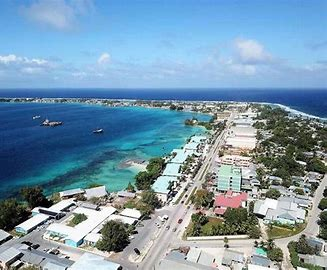
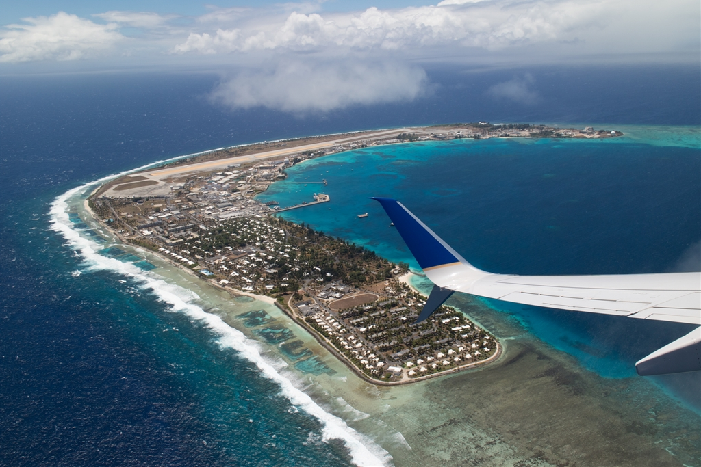
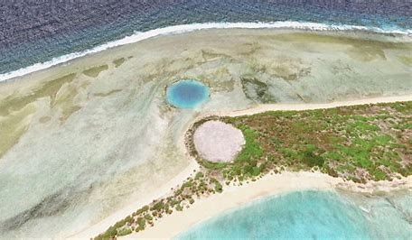
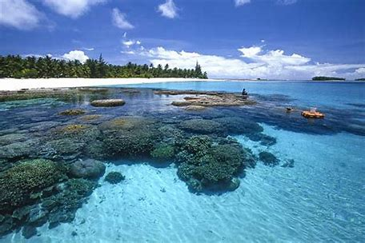

マーシャル諸島は太平洋の西部に位置し、ミクロネシア地域に属し、独立国です。北緯7度から14度、東経160度から173度の間に分布しています。
マジュロ環礁（首都マジュロがある）、クェゼリン環礁（軍事基地がある）、エニウェトク環礁（核実験が行われた）などが主要な場所です。
  マーシャル諸島周辺の綺麗な海によってサンゴ礁がさかえています。人々はそれを観光資源として利用しています。 
グアムからユナイテッド航空のアイランド・ホッピング便（アイランドホッパーともいう。）を利用して移動することができます。各週２便運航です。
ココヤシの木を中心に島が覆われ、景観を支えられています。
４ 質の高い教育をみんなに
マーシャル諸島内の公立デラップ小学校で、地域の保護者などとも協力して、算数の教育などを中心におこなっています。